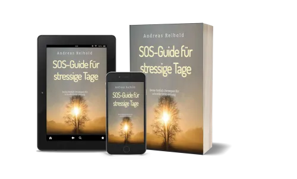

SOS-Guide für stressige Tage
Produktprofil · Marktplatz-Daten 2026-10-14 · Verkaufsseiten-Recherche 2026-10-14 · Kategorien: Personal Development
- SOS-Guide für stressige Tage ist ein/e E-Book in Personal Development, vertrieben über den Digistore24-Marktplatz von Anbieter Alanreib, gelistet seit 2025-03-23.
- Listenpreis $0.00 (single payment) — Checkout, Auslieferung und Rückerstattungen laufen über Digistore24 selbst, nicht über den Anbieter.
- Käuferschutz: keine standardisierte Garantie-Formulierung gefunden — Rückerstattungsbedingungen vor der Zahlung auf der offiziellen Seite prüfen.
Interesse an SOS-Guide für stressige Tage? Aktueller Preis, Boni und Garantiebedingungen finden Sie auf der offiziellen Seite des Anbieters:
Offizielle Verkaufsseite ansehen
Affiliate-Link (Werbung) — wir verdienen ggf. eine Provision, ohne Mehrkosten für Sie.

Marktplatz-Daten
| Produkttyp | E-Book |
|---|---|
| Preis | $0.00 (Single payment) |
| Garantie/Rückgabe | Laut Verkaufsseite des Anbieters — vor dem Kauf auf der offiziellen Seite prüfen |
| Anbieter | Alanreib (gelistet seit 2025-03-23) |
Marktplatz-Beschreibung des Anbieters
Verdiene Geld mit einem Produkt, das Menschen wirklich weiterbringt! Du suchst ein Affiliate-Produkt, das nicht nur gut klingt, sondern wirklich wirkt? Dann bist du hier richtig. Du bewirbst einen kostenlosen SOS-Guide gegen Stress – ein emotionales, hochwertiges Freebie, das Menschen sofort abholt. Der Clou: Nach dem Download durchlaufen deine Leads einen durchdachten Funnel mit starken Upsells : → Geführte Meditationen , die direkt helfen → Coaching-Angebot , das langfristig Veränderung bringt Und das Beste: Du verdienst bei jeder Station 50% mit – automatisch. Über 100,00 Euro für dich bei Funneldurchlauf möglich! Warum dieser Funnel so gut konvertiert: ✅ Kostenloser Einstieg mit echtem Mehrwert Der SOS-Guide ist kein 08/15-Freebie, sondern ein echter Problemlöser. Wer ihn liest, spürt sofort: Hier geht’s um mich. ✅ Hochwertiger Upsell mit starker Nachfrage Beruhigende, professionelle Meditationen, die sofort Entlastung bringen – emotional und greifbar. ✅ Coaching-Angebot für langfristige Transformation Egal ob Upsell oder nicht – alle Leads landen auf der Coaching-Seite. Hier beginnt der nächste Schritt – mit hoher Kaufbereitschaft . Deine Vorteile als Affiliate: ✅ Hochkonvertierender Funnel mit kostenlosem Einstieg ✅ Emotionale Verkaufspsychologie + ehrlicher Content ✅ Laufende Provisionen bei Upsells & Coaching ✅ Werbematerial: E-Mails, Bilder "Es gibt kein besseres Gefühl, als mit echtem Mehrwert Geld zu verdienen." Hilf Menschen, ihren Stress zu bewältigen – und baue dir gleichzeitig ein stabiles Einkommen auf.
Von der Verkaufsseite des Anbieters
Wie Produkte dieser Art geliefert werden
Allgemeiner Hinweis zu diesem Produkttyp (keine anbieterspezifische Anleitung): E-Books auf Digistore24 werden als digitaler Download geliefert (meist PDF/EPUB): direkt nach dem Checkout erhalten Sie einen Downloadlink oder Mitgliederzugang und können auf jedem Gerät lesen. Für die genaue Anwendung von SOS-Guide für stressige Tage sind die offizielle Verkaufsseite und die enthaltenen Materialien maßgeblich.
Was ist SOS-Guide für stressige Tage?
SOS-Guide für stressige Tage ist ein/e e-book in der Kategorie Persönlichkeitsentwicklung des Digistore24-Marktplatzes, veröffentlicht von Anbieter Alanreib und im Verkauf seit 2025-03-23. Der Anbieter beschreibt es so: "Verdiene Geld mit einem Produkt, das Menschen wirklich weiterbringt! Du suchst ein Affiliate-Produkt, das nicht nur gut klingt, sondern wirklich wirkt? Dann bist du hier richtig. Du bewirbst einen kostenlosen SOS-Guide gegen Stress – ein emotionales, hochwerti" (Marktplatz-Beschreibung des Anbieters, leicht gekürzt).
SOS-Guide für stressige Tage Preis: was Sie zahlen
Der Marktplatz listet SOS-Guide für stressige Tage zum $0.00 Preis (single payment). Digistore24 fügt im Checkout die gesetzliche Steuer Ihres Landes hinzu — dort sehen Sie den Endbetrag vor der Zahlung. Eine separate Plattformgebühr gibt es nicht; Anbieter können eigene Upsells nach dem Checkout anbieten.
SOS-Guide für stressige Tage Rückerstattung und Geld-zurück-Garantie
Wir haben keine standardisierte Garantie-Formulierung auf der Verkaufsseite gefunden. Rückerstattungen für Digistore24-Käufe laufen über die Plattform: Antrag über den Support-Link in Ihrer Bestell-E-Mail, innerhalb des Garantiezeitfensters, das im Checkout angezeigt wird. Praktischer Rat: Entscheiden Sie innerhalb des Fensters — wenn das Produkt unter den Erwartungen bleibt, erstatten lassen statt irren lassen.
Mechanik im Detail: So funktionieren Digistore24-Rückerstattungen.
Für wen ist SOS-Guide für stressige Tage geeignet?
Basierend auf der Persönlichkeitsentwicklung-Einordnung und der single payment-Abrechnung richtet sich SOS-Guide für stressige Tage an Käufer, die persönlichkeitsentwicklung-Lösungen suchen zum Einstiegspreis. Der ehrliche Test ist nicht die Kategorie, sondern Ihre eigene Situation: Werden Sie es realistisch innerhalb des Garantiefensters nutzen? Wenn ja, ist der Preis eine Investition; wenn nein, ist er Ballast — unabhängig von der Qualität.
Ist SOS-Guide für stressige Tage seriös? Was Sie vor dem Kauf prüfen
Wir bewerten keine Seriosität — das kann niemand, ohne das Produkt zu nutzen. Prüfbare Punkte, alle auf dieser Seite: die Marktplatz-Historie des Anbieters (im Verkauf seit 2025-03-23), die wörtlichen Verkaufsseiten-Auszüge unten (gekennzeichnet als Anbieteraussagen — deren Werbung, nicht unsere Empfehlung), die Garantiebedingungen im Checkout und die Auslieferungsart. Vorsichtsignale bei jedem Angebot: Countdown-Dringlichkeit gepaart mit vagen Rückerstattungsbedingungen, Testimonials ohne Datum und Anbieterseiten, die den Preis bis zum Checkout verstecken.
Wie kommen Sie nach dem Kauf an SOS-Guide für stressige Tage?
Der Checkout läuft über Digistore24. Nach der Zahlung: E-Books auf Digistore24 werden als digitaler Download geliefert (meist PDF/EPUB): direkt nach dem Checkout erhalten Sie einen Downloadlink oder Mitgliederzugang und können auf jedem Gerät lesen. Bewahren Sie die Bestell-E-Mail auf — sie ist Ihr Schlüssel zum/d zur e-book, zu Rückerstattungsanträgen und zum Digistore24-Käufersupport.
SOS-Guide für stressige Tage Erfahrungen: so recherchieren Sie richtig
Die meisten „Erfahrungsberichte" zu Marktplatz-Produkten sind Affiliate-Inhalte — einschließlich Seiten wie dieser, die an Käufen mitverdienen. Behandeln Sie jeden Bericht (auch unseren) als Ausgangspunkt und prüfen Sie gegen Primärquellen: die Verkaufsseite des Anbieters, die Digistore24-Rückerstattungsrichtlinie und — für persönlichkeitsentwicklung — unabhängige Communities außerhalb des Affiliate-Ökosystems. Auf dieser Seite sind die Verkaufsseiten-Auszüge unten wörtlich zitiert, damit Sie die Aussagen des Anbieters bewerten können, ohne wegzuklicken.
Wie Sie SOS-Guide für stressige Tage sicher kaufen
- Öffnen Sie die offizielle Verkaufsseite und lesen Sie das vollständige Angebot.
- Bestätigen Sie Endpreis und Garantiezeitfenster auf der Digistore24-Kassenseite — sie ist bindend, kein Vergleichsportal.
- Zahlen Sie innerhalb des Digistore24-Checkouts (niemals per Überweisung oder Off-Platform-Links).
- Speichern Sie die Bestellbestätigung; notieren Sie die Rückerstattungsfrist im Kalender.
- Prüfen Sie zügig. Der Digistore24-Käufersupport hilft, wenn der Anbieter nicht reagiert.
Vollständiges Recherche-Archiv für dieses Produkt (Markdown: kompletter Marktplatz-Datensatz + wörtliche Verkaufsseiten-Auszüge): SOS-Guide für stressige Tage — vollständiges Datenarchiv (Markdown-Datei: 51950-sos-guide-f-r-stressige-tage.md).
- Listenpreis & Abrechnung — Quelle: offizielle Digistore24-Marktplatz-API, Stand 2026-10-14. Maßgeblich für den aktuellen Preis ist immer die Kassenseite.
- Verkaufsseiten-Zitate — Quelle: https://www.andreasreibold.com/SOS-Guide/, abgerufen 2026-10-14 (Methode: rohes HTML). Verify: offizielle Seite öffnen.
- Garantie / Rückgabe — vom Anbieter festgelegt; vor dem Kauf auf der Verkaufsseite bestätigen.
- Nicht von uns geprüft: Produktqualität, Ergebnisse, Testimonials — kein Praxistest für dieses Listing durchgeführt.
Häufige Fragen zu SOS-Guide für stressige Tage
Antworten aus dem Marktplatz-Snapshot (2026-10-14) und der Verkaufsseiten-Recherche (2026-10-14); Anbieteraussagen sind inline gekennzeichnet.
Was ist SOS-Guide für stressige Tage?
SOS-Guide für stressige Tage ist ein Angebot des Typs „E-Book" im Digistore24-Marktplatz, Anbieter: Alanreib, gelistet seit 2025-03-23. Eingepflegt unter Persönlichkeitsentwicklung. Digistore24 wickelt Checkout, Lieferung und Rückgaben ab.
Wie viel kostet SOS-Guide für stressige Tage?
Der Digistore24-Marktplatz listet es für $0.00 (single payment). Preise legt der Anbieter fest und können sich ändern — der Marktplatz-Eintrag oben zeigt den Schnappschuss; die offizielle Verkaufsseite zeigt den aktuellen Preis.
Gibt es eine Geld-zurück-Garantie für SOS-Guide für stressige Tage?
Unsere Verkaufsseiten-Recherche hat keine explizite Garantie-Formulierung gefunden. Viele Digistore24-Produkte bieten 60 Tage Geld-zurück, aber das legt jeder Anbieter selbst fest — bestätigen Sie es auf der offiziellen Verkaufsseite, bevor Sie kaufen.
Ist SOS-Guide für stressige Tage seriös?
Wir bewerten keine Seriosität — wir veröffentlichen überprüfbare Zahlen: Anbieter Alanreib (gelistet seit 2025-03-23), mit der vollständigen Verkaufsseiten-Recherche archiviert auf dieser Seite (Anbieteraussagen als solche gekennzeichnet). Lesen Sie unsere 6-Punkte-Bewertungsmethode und entscheiden Sie anhand der Zahlen — oder diskutieren Sie SOS-Guide für stressige Tage auf GitHub.
Wo kann ich SOS-Guide für stressige Tage sicher kaufen?
Nur über die offizielle Verkaufsseite, die auf dieser Seite verlinkt ist (Checkout und Rückgaben laufen über Digistore24). Prüfen Sie dort Preis und Garantie vor der Bestellung. Der Link ist ein Affiliate-Link — der Kauf unterstützt diese Website ohne Mehrkosten für Sie.
Wie erhalte ich SOS-Guide für stressige Tage nach der Zahlung?
Der Checkout läuft über Digistore24: Nach der Zahlung erhalten Sie Ihren Zugang oder Download per E-Mail und in Ihrem Digistore24-Kundenkonto. Lieferdetails für diesen Produkttyp: E-Books auf Digistore24 werden als digitaler Download geliefert (meist PDF/EPUB): direkt nach dem Checkout erhalten Sie einen Downloadlink oder Mitgliederzugang und können auf jedem Gerät lesen. Bei Problemen kann der Digistore24-Käufersupport Ihre Bestellung wiederherstellen.
Alle 50 Käuferfragen zu Persönlichkeitsentwicklung — das komplette Kategorie-FAQ.
SOS-Guide für stressige Tage auf Reddit diskutieren
In Community-Threads vergleichen echte Käufer Erfahrungen. Wir verlinken Communities, keine einzelnen Posts — Threads verschwinden, Subreddits bleiben:
- Reddit-Suche nach „SOS-Guide für stressige Tage" — Live-Ergebnisse, von uns nicht beeinflusst.
- Top-„Erfahrungs"-Treffer dieses Jahr — selbst nach Aktualität filtern.
Passendes auf Amazon.de
Physische Produkte und Zubehör, die häufig zusammen mit SOS-Guide für stressige Tage gekauft werden:
- Personal Development auf Amazon.de — Top-Ergebnisse, Amazon-Ranking.
- Bestseller: Personal Development — live Liste von Amazon, von uns nicht kuratiert.
Werbung: Als Amazon-Partner verdient DigistorePicks DE an qualifizierten Käufen (Partner-tag adminstorede-21). Amazon setzt eigene Preise und Provisionen (niedrige einstellige Prozente — weit unter den 30–75% der Digistore24-Anbieter). Amazon ist ein Convenience-Angebot für Sachprodukte, kein Ersatz für das digitale Produkt oben.
Ähnliche Angebote in Persönlichkeitsentwicklung

Dauer: Laufzeit 24 Wochen / 6 Monate 1:1 Intensiv Coaching / NeuroZen ® Mentoring für DEIN persönliches Ziel 22 x ZoomCalls von ca. 60-90 Minuten 1 Tag VIP-Live

Dauer: Laufzeit 12 Wochen 1:1 Intensiv Coaching / NeuroZen® Mentoring für DEIN persönliches Ziel - 12 x ZoomCalls von ca. 60-90 Minuten - Datenaustausch via Mai

WOLKENWEICH Online-Begleitung - Dein 6-monatiger Premium Zugang - eingebettet, stabil von allen Seiten, geerdet, sicher, geborgen, ruhig Du erhältst einen Premi

MATRIXPRINZIP – High-Ticket-Produkt mit bis zu 820,56€ Provision pro Verkauf! Mindset, emotionale Intelligenz und finanzielle Intelligenz – genau die Fähigkeite
Ähnliche Suchanfragen
Wo Sie es sich ansehen können
Wo Sie es sich ansehen können
Aktuelle Preise, Garantie und Boni finden Sie auf der offiziellen Verkaufsseite:
Offizielle Verkaufsseite ansehen
Das ist ein Affiliate-Link (Werbung) — kaufen Sie darüber, verdienen wir ggf. eine Provision, ohne Mehrkosten für Sie.
Quellen & weiterführende Informationen
- Offizielle Verkaufsseite (aktueller Preis, Garantie, Boni): www.andreasreibold.com/SOS-Guide/ (Affiliate-Link)
- Öffentliche Digistore24-Produktseite: checkout-ds24.com/product/603276
- Vollständige Recherche-Datei (Markdown, versioniert): content/products/51950-sos-guide-f-r-stressige-tage.md
- Affiliate-Supportseite des Anbieters: www.andreasreibold.com/SOS-Affiliates/
- Marktplatz-Kategorie: Persönlichkeitsentwicklung
Wie wir Produkte wie SOS-Guide für stressige Tage bewerten
Sechs Prüfungen, ausschließlich mit offiziellen Marktplatz-Zahlen. Die vollständige Bewertungsmethode lesen · unsere Recherche-Standards & Kennzeichnung.
Fragen oder eigene Erfahrungen mit SOS-Guide für stressige Tage?
Praxis-Tests veröffentlichen wir erst, nachdem wir ein Produkt selbst gekauft haben — aber Ihre Erfahrung hilft anderen Lesern: Diskussion zu SOS-Guide für stressige Tage auf GitHub starten/verfolgen. Falsche Zahl gefunden? Korrektur melden — jede Seite zeigt ihre Datenstände, Korrekturen gelten für die ganze Website.